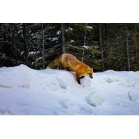
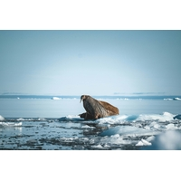
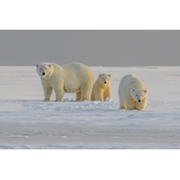
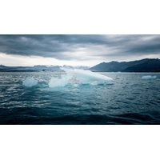
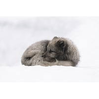

Our Mission
Our mission is to educate people about pollution and encourage the fast fashion industry to adopt cruelty-free and more sustainable alternatives to creating products and reduce carbon footprint.
Discover who we are, what we stand for, and why saving dying ecosystems is crucial.
Feline Faux is a charity organisation dedicated to promoting the impact of global warming and dying ecosystems. Through donations, these ecosystems are at the forefront of change.
We aim to educate consumers about the impact of pollution and climate change while encouraging society, factories and communities to explore innovative alternatives.
Our mission is to educate people about pollution and encourage the fast fashion industry to adopt cruelty-free and more sustainable alternatives to creating products and reduce carbon footprint.
We envision a future where empathy is common courtesy, innovative and sustainable living without causing unnecessary harm to ecosystems.
Compassion, ethical responsibility, sustainability, education and innovation guide everything that Feline Faux represents.
Select a photo to view it larger.





Read about our services or get involved with Feline Faux.
Get Involved